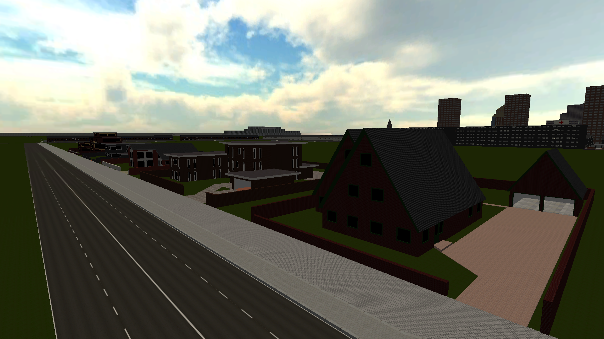
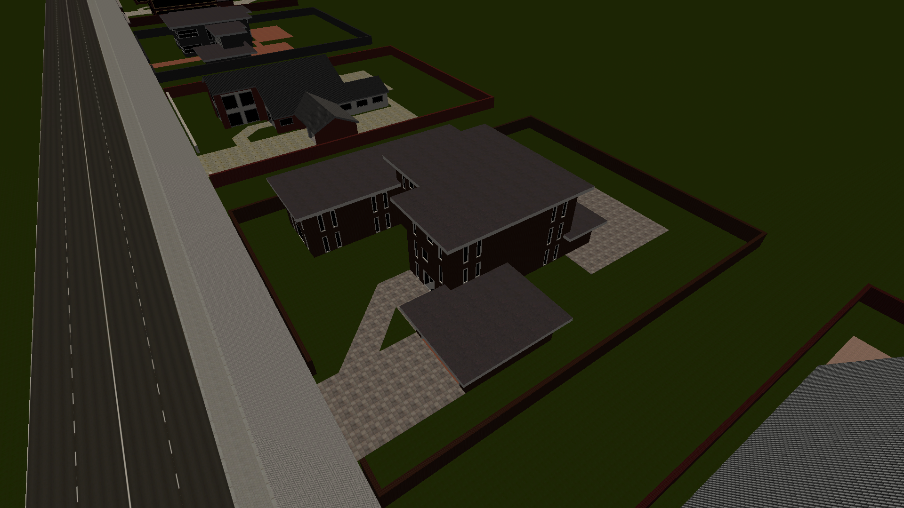
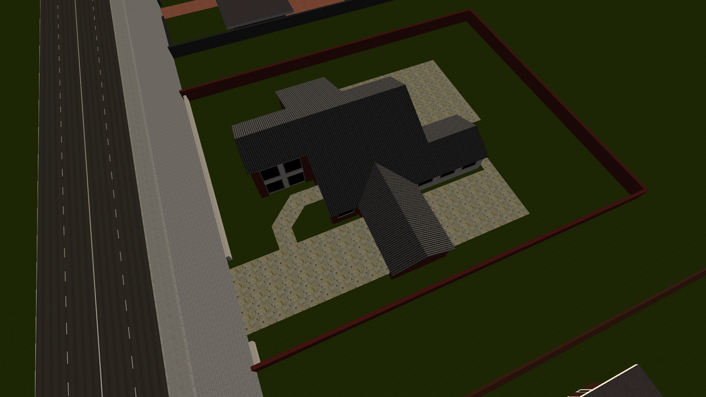
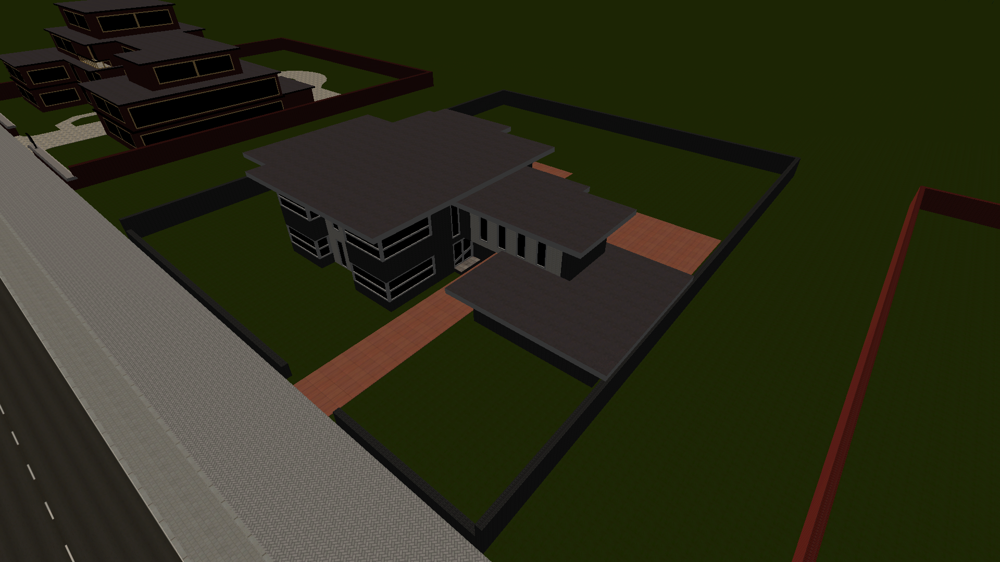
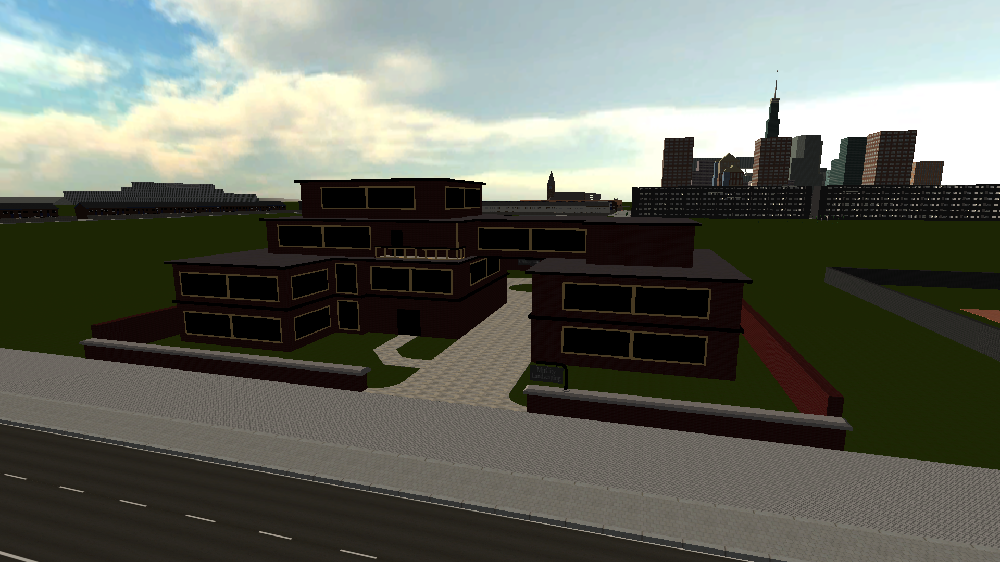
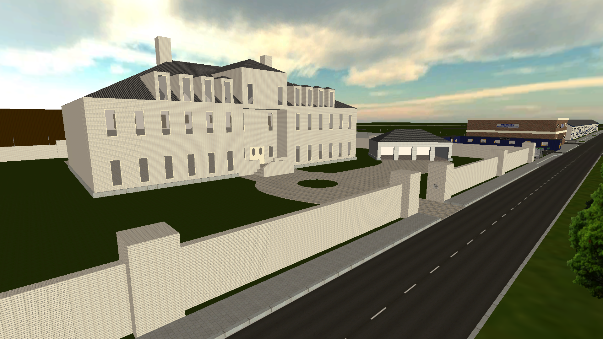
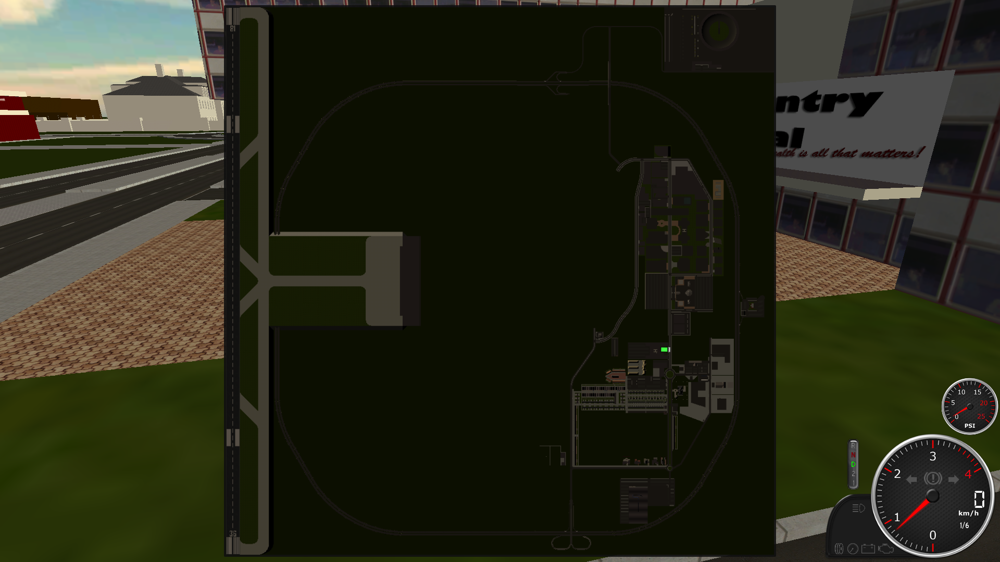
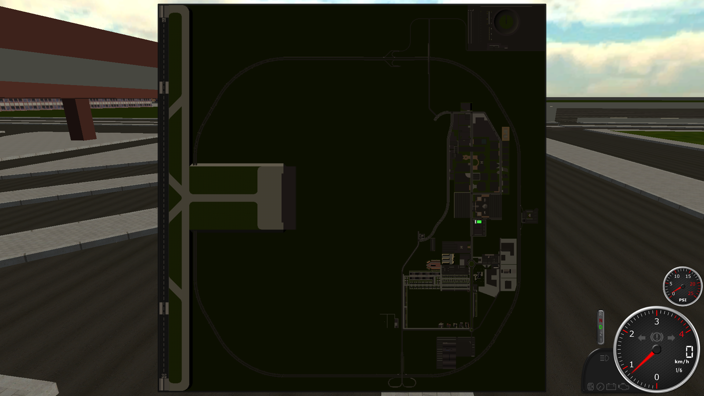

MitCity Index
Welcome to the Index of MitCity. Here you will find everything that you need to know about this great city and its people!
General:
- Major: Trucker_Gigi
- Popular Facilities: The general hospital, the bus depot, multiple warehouses which are offering contracts for truckers, the police station, the moderator's street and the vehicle test
facility north of the city
- Highways: One looping around the city
- Airport: Yes, but not easy accessible by car
- Parking Spaces: Many at every facility and property
- Accessibility for Trucks: Medium, tier three combinations should not enter the city and highway
Moderator's Street:
Street name: Mod Street
Properties: 5
Mod Street 1 | Owner: Xploder98

Mod Street 2 | Owner: N/A

Mod Street 3 | Owner: Maniek

Mod Street 4 | Owner: Pixel

Mod Street 5 | Owner: Trucker_Gigi

Company and Faction Facilities:
Mansion at spawn | Owner: DOTAS

The mansion is the HQ of the DOTAS. They are also using the testing area north of MitCity for tests.
Please note that obvious buildings like hospitals and police stations are not listed, they are reserved for their factions of course
Public Facilities:
Hospital:
- Parking Spaces: Many directly behind the hospital building. No access for tall vehicles
- ER Access: Vehicles can park on the area right in front of the hospital. The driveway to the parking area and some spots for ambulances should be held clear
- Helicopter Access: Yes
- Functions: MRI, X-ray, General OP, ER, Trauma and Bio-hazard station
The hospital is known for its trauma station which is often used for traffic accident victims from other cities (baker ranch for example).

Bus Station:
- Parking Spaces: Only few, cars can park there but it's not suggested to do so
- Bus Stops: Many, even more than needed
- Turn area: Yes, multiple
- Accessible for: every type of bus

Police Station:
Under Construction...